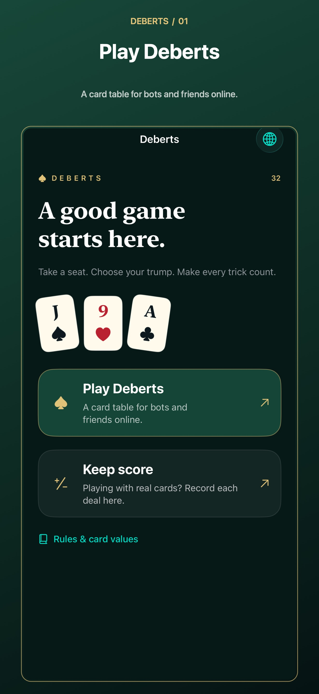
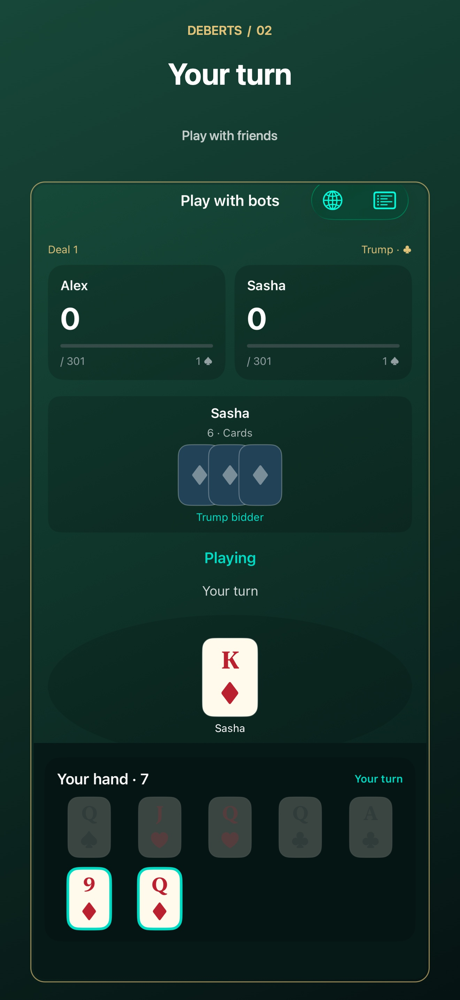
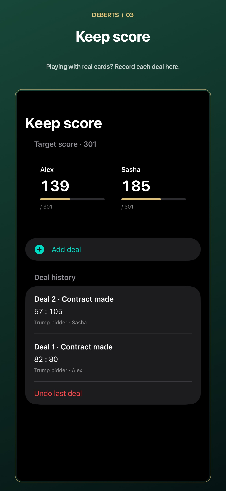

32 CARDS · DEBERTS
A classic 32-card game for iPhone and iPad. Play with bots, invite friends through Game Center, or keep score for games with real cards.



Open Play Deberts, choose 2–4 players and a target score, then play with bots. Local games save automatically; Resume saved game continues your last local table. For physical cards, use Keep score and enter the result after every deal.
All players must sign in to Apple Game Center, use compatible app versions, choose matching table settings and stay connected. Invite friends from the game's lobby. A temporary connection loss pauses play; refresh the table after reconnecting. The host keeps the game, so closing the host app ends the room. There are no custom room codes or host migration.
The app uses one classic Deberts preset; regional rules vary. Rules and table conventions appear inside the app. Use the globe menu to select a language. Card ranks use the international J, Q, K and A labels.
Report an issue or request help on GitHub. Include your app version, iOS version and steps to reproduce. Do not post passwords, Apple account details or other private data.